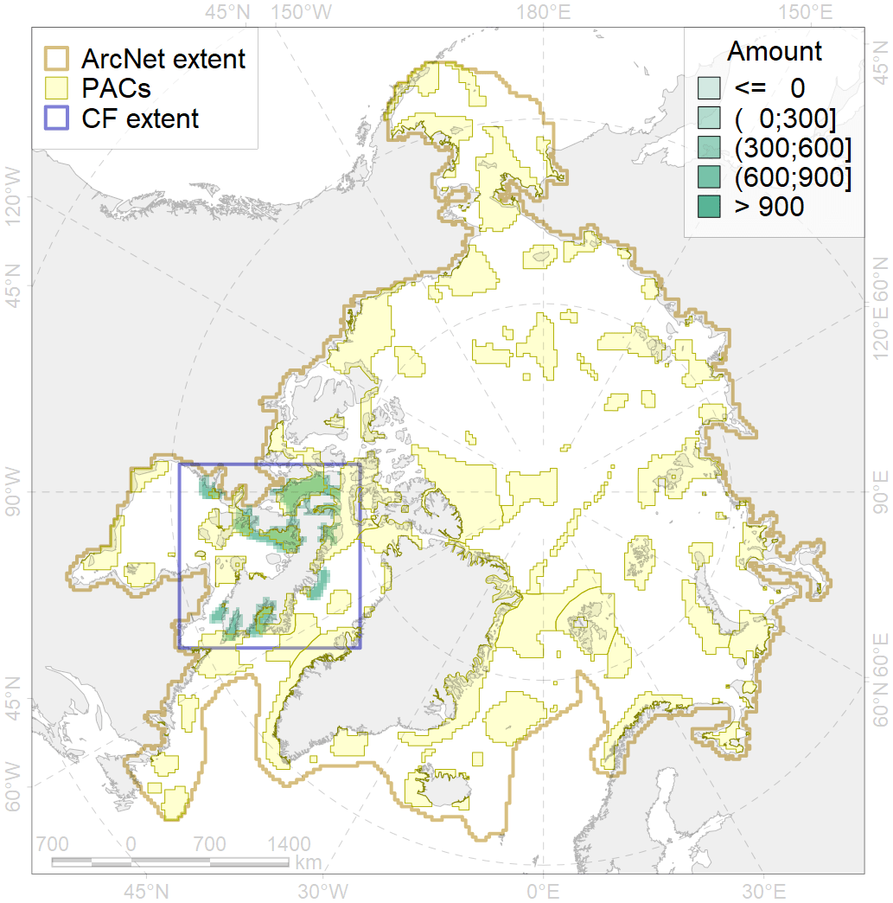
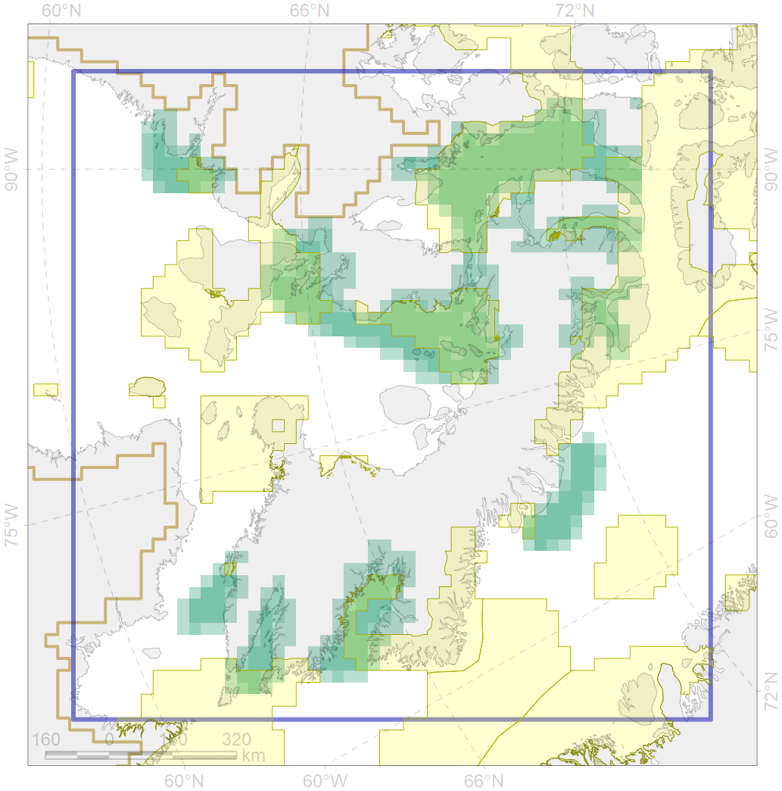

5065

| CF ID | 5065 |
| CF Name | Killer whale summer feeding areas in the North West Atlantic |
| Time Period | 1986-2001 |
| Source(s) | NAMMCO; Ramirez-Martinez et al 2017 |
| Seasonality | January-December |
| Depth Horizon | 0-400 |
| Methodology | Ship surveys |
| Author Name | Filatova |
| Notes | |
| Conservation Target Set in the Scenario | 0.06 |
| Conservation Target Achieved in the Scenario | 0.587 (Scenario: 978.8%) |
| PAC ID | Proportion in the PAC | Contribution to ArcNet Target Achievement | PAC’s Contribution to the Achieved Target |
|---|---|---|---|
| 46 | 5.2% | 72.7% | 7.4% |
| 50 | 0.5% | 7.9% | 0.8% |
| 52 | 7.4% | 115.8% | 11.8% |
| 65 | 23.6% | 363.5% | 37.1% |
| 66 | 13.5% | 197.4% | 20.2% |
| 67 | 5.9% | 87.5% | 8.9% |
| 68 | 1.8% | 21.4% | 2.2% |
| 75 | 0.1% | 1.4% | 0.1% |
| 76 | 1.4% | 21.4% | 2.2% |
| inner | 59.4% | 889.1% | 90.8% |
| outer | 40.6% | 89.7% | 9.2% |